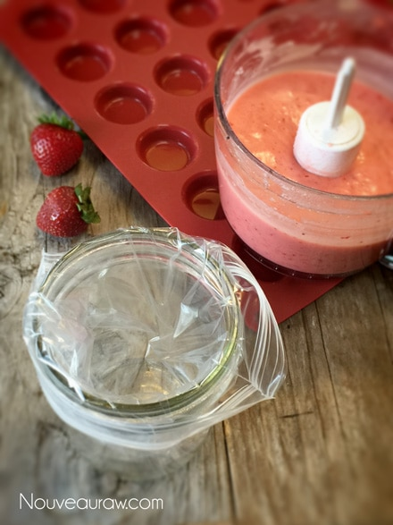
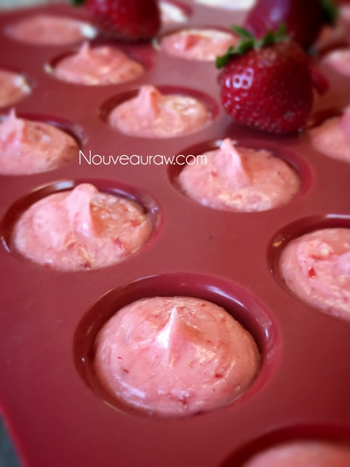
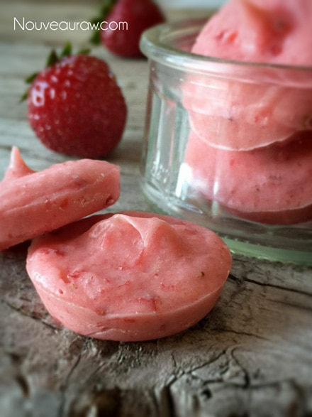

Coconut Strawberry Chips -thyroid health-

~ raw, vegan, gluten-free, nut-free ~
Today’s simple recipe is made especially for my thyroid, which is under-active. Therefore I have what is called hypothyroidism right along with more than 12 percent of the U.S. population! An estimated 20 million Americans have some form of thyroid disease, and 60 percent of those with thyroid disease are unaware of their condition…
What the heck?!
The thyroid is a butterfly-shaped gland located in the throat region, in the middle of the lower part of the neck. It produces a hormone that influences every cell, tissue, and organ in the body. It regulates metabolism and the production and usage of energy. There are many wonderful things that we can do to support our thyroid, starting with…
Cold-pressed Coconut Oil!
One of the most important supplements to incorporate into your diet if you suspect you have a thyroid disease (and even if you don’t) is raw coconut oil. There is a lot of promising research that has shown that extra virgin, raw coconut oil is of great benefit for this gland. Coconut oil is a medium-chain triglyceride (MCT), which means it is an instant source of energy and can help to stimulate the thyroid.
It is recommended to take 1 Tbsp (per 150 lb. person) daily. Granted, taking 1 Tbsp can be a bit much for a person to handle at first. I LOVE coconut oil, but I can’t handle a mouthful of oil, so I created these tasty “chips.” If you are not used to coconut oil in your daily diet, I suggest starting with 1 tsp a day and slowly work up. It can cause some stomach upset. For more information on coconut oil, read (here).
Symptoms of an underactive thyroid include extreme fatigue, depression, forgetfulness, and some weight gain. Severely dry skin is another sign of hypothyroidism, and coconut oil can be used as a moisturizer or shaving lotion, and it will still have the thyroid-stimulating effect when rubbed in. I like to rub a small amount in my thyroid area. If nothing else, I smell like a tropical sea breeze. :)
Yields 30 (2 tsp each) chips
- 1 cup coconut oil, softened
- 8 organic strawberries
- 1 tsp fresh lemon juice
- Dash Himalayan pink salt
Preparation:
- Bring all ingredients to room temperature. Soften the coconut oil but don’t melt it completely.
- It’s important to have all the ingredients at the same temperature, otherwise, the cold strawberries will cause bits of coconut oil to firm up and make the batter gritty.
- Be sure that the coconut oil isn’t fully melted. If it is it will cause the other ingredients to sink to the bottom of the mold… causing a separation of ingredients:
- Prepare the piping bag by sliding a ziplock bag into a glass, folding the opening over the edge of the glass. Set aside. Have the mold that you wish to use ready and waiting.
- Place all the ingredients in the small bowl attachment that comes with the food processor. Process until everything is creamed together.
- Pour the mixture into the ziplock back, gather up the edges of the bag, and snip a small piece off of the corner.
- Pipe the mixture into each mold. Gently tap the mold on the counter when all cavities are filled.
- Slide into the freezer to set up. They will be ready to eat by the time you finish the dishes. :)
- Pop-out of the mold and store them in a glass, airtight, freezer-safe container. Once frozen, they can be kept in the fridge too.
- Enjoy!



© AmieSue.com